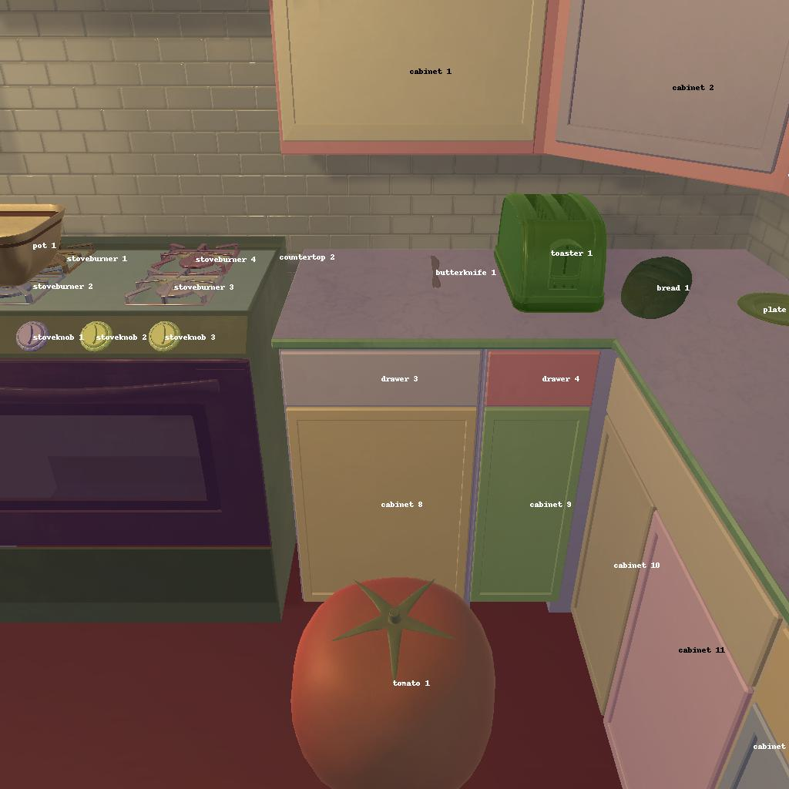

---------------------------------------------------------task: 29---------------------------------------------------------
--------------------------------------------------------------------------------------------------------------------------------------------------------------------
--------------------------------------------------------------------------------------------------------------------------------------------------------------------
Step:--------------------------------------------------------------------------6-------------------------------------------------------------------------------
----------------------------------------
VLM Prompt:
Image1:
Image2:
**Instruction**
1. Analyze the provided image to identify all visible household objects, focusing on those relevant to the task description "find two tomato and put them in countertop."
2. Use the analysis of the image and the task hint "The agent must find an object of the desired type, pick it up, find the correct location to place it, put it down there, then look for another object of the desired type, pick it up, return to previous location, and put it down there with the other object." to answer the question: what is the most reasonable action in the choices for the task description "find two tomato and put them in countertop"?
4. Decide and write the answer using the template: The answer is: (i): , where i is the real number. If there is no desired object in the image, search every place based on **Initial Observation** to find the object. And if no one is exactly correct, choose a similar answer.
**Initial Observation**
You are in the middle of a room. Looking quickly around you, you can see cabinet (1-20), toaster (1), microwave (1), garbagecan (1), countertop (1-2), drawer (1-4), stoveburner (1-4), sinkbasin (1), sink (1), fridge (1), diningtable (1), coffeemachine (1)
**Answer Choices**
(1): go to toaster 1
(2): go to cabinet 4
(3): go to cabinet 5
(4): go to microwave 1
(5): go to garbagecan 1
(6): go to countertop 1
(7): go to drawer 1
(8): go to cabinet 6
(9): go to cabinet 7
(10): go to drawer 2
(11): go to stoveburner 1
(12): go to stoveburner 2
(13): go to countertop 2
(14): go to cabinet 8
(15): go to cabinet 9
(16): go to cabinet 10
(17): go to drawer 3
(18): go to drawer 4
(19): go to stoveburner 3
(20): go to stoveburner 4
(21): go to cabinet 11
(22): go to cabinet 12
(23): go to cabinet 13
(24): go to cabinet 14
(25): go to sinkbasin 1
(26): go to sink 1
(27): go to cabinet 15
(28): go to fridge 1
(29): go to cabinet 16
(30): go to cabinet 17
(31): go to cabinet 18
(32): go to cabinet 19
(33): go to diningtable 1
(34): go to coffeemachine 1
(35): go to cabinet 20
(36): open cabinet 2
(37): close cabinet 2
(38): put tomato 1 in/on cabinet 2
(39): examine tomato 1
(40): examine cabinet 2
**Answer**
Let's think step by step by following the instructions.
----------------------------------------
----------------------------------------
Original Response:
First, we need to find two tomatoes. In Image 1 and Image 2, we can see "tomato 1" on the floor and on countertop 2, respectively. We do not see a second tomato in either image, so we must search other locations.
Given the task description "find two tomato and put them in countertop," the most reasonable action after finding the first tomato is to look for the second tomato. Since we do not see the second tomato in the images, we must search other areas based on the Initial Observation.
None of the answer choices directly state "search for the second tomato," but we can infer that we should look in places where tomatoes might be stored, such as cabinets or the fridge. Among the answer choices, the closest action to this would be to open various cabinets to search inside.
Since the answer choices do not include an option to search for the second tomato, we can choose an action similar to searching, which is to open a cabinet that has not been opened in the images provided.
The answer is: (36): open cabinet 2.
----------------------------------------
----------------------------------------
>>> Refine Original VLM Response and Get Pure Action: open cabinet 2
----------------------------------------
-----------------------------------------------------------------
Running time: 10.371831178665161 seconds
Total Money: 14.490300000000005
-----------------------------------------------------------------
-----------------------------------------------------------------
Text Observation:You open the cabinet 2. The cabinet 2 is open. In it, you see a pot 1, a bread 1, a plate 1, a stoveknob 1, a stoveknob 2, a stoveknob 3, and a butterknife 1.
-----------------------------------------------------------------
UNSUCCEED